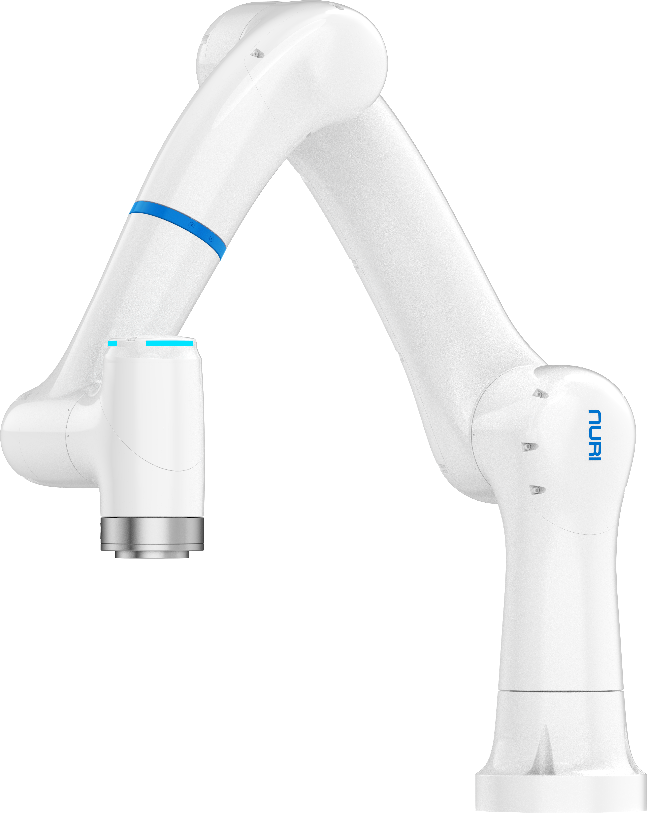
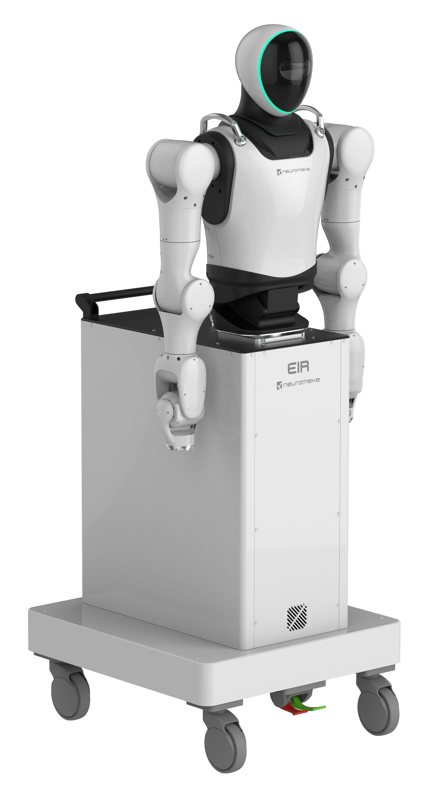
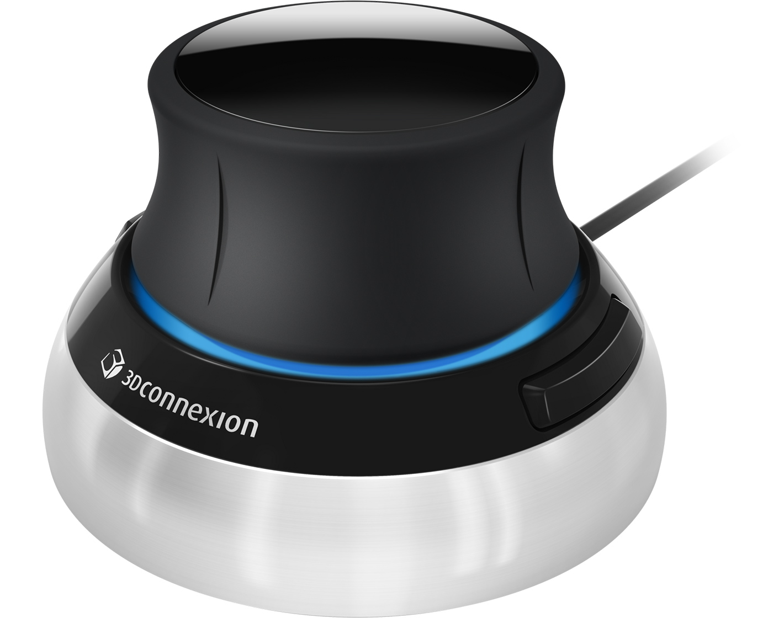
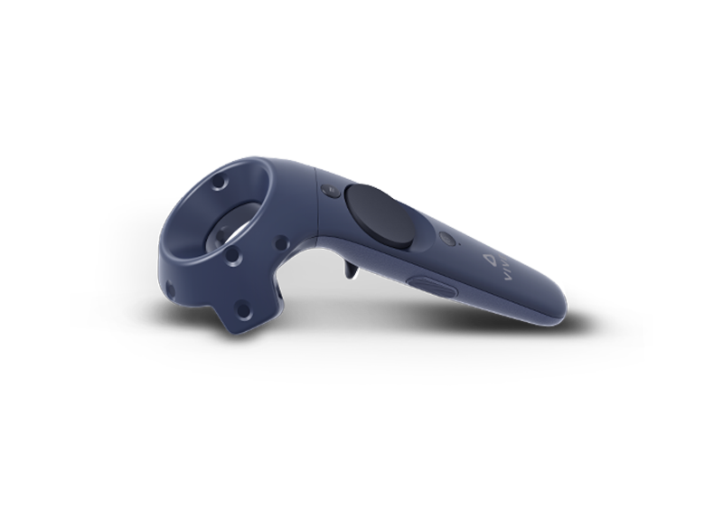
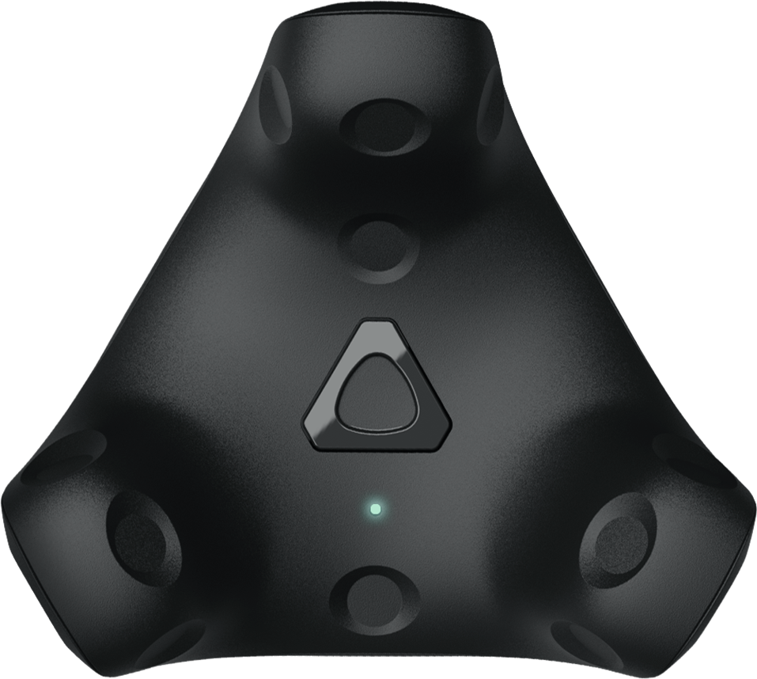
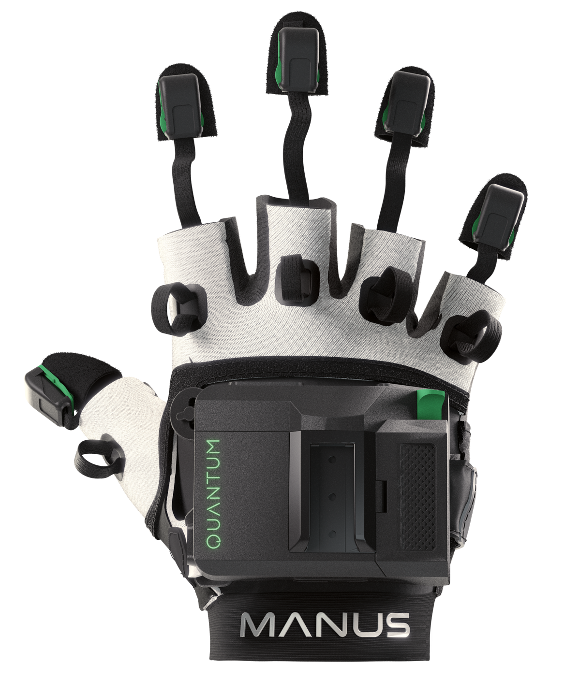
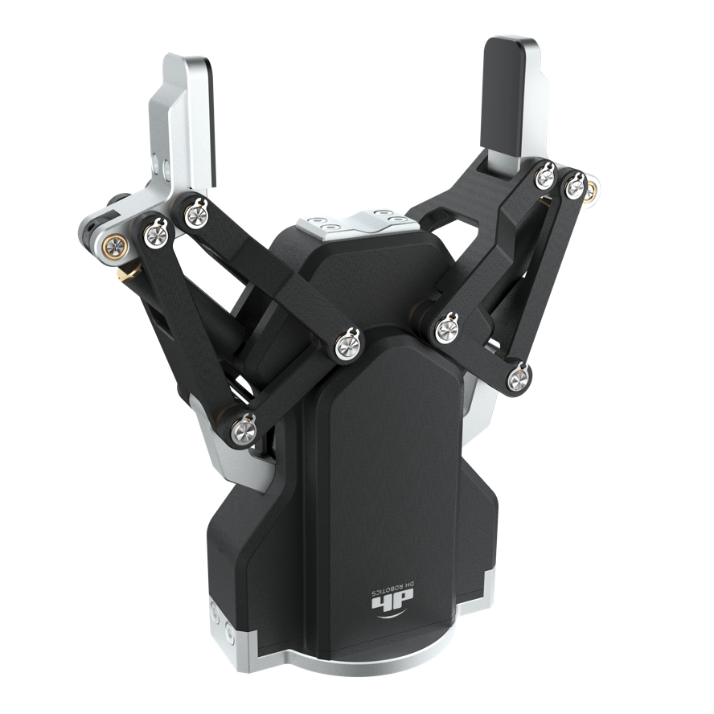
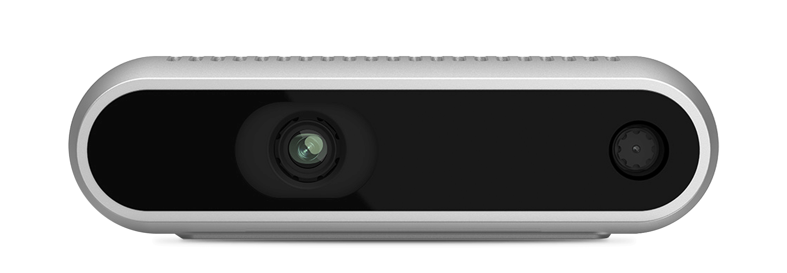

01
Challenge & Focus
도전몰입주도성
- 방향 설정
목표가 정해지면 필요한 일을 스스로 찾아 움직입니다.
- 깊은 몰입
새로운 과제에 뛰어들어 필요한 지식을 집중해서 익힙니다.
- 새로운 시도
실패를 두려워하지 않고 새로운 방법을 찾습니다.
ROBOTICS SOFTWARE ENGINEER
로봇 제어 · 텔레오퍼레이션 · 모방학습
저를 소개합니다.
도전 · 검증 · 학습 · 협업
도전하고, 끝까지 풀고, 배우며, 함께 완성합니다.
도전몰입주도성
목표가 정해지면 필요한 일을 스스로 찾아 움직입니다.
새로운 과제에 뛰어들어 필요한 지식을 집중해서 익힙니다.
실패를 두려워하지 않고 새로운 방법을 찾습니다.
집요함검증완결성
답을 찾을 때까지 원인을 집요하게 파고듭니다.
가설과 방법을 유연하게 바꾸며 실행 결과를 검증합니다.
끝났다고 넘기기보다 한번 더 확인하고 마무리합니다.
학습민첩성피드백적응력
낯선 환경에서도 필요한 것부터 배우며 빠르게 적응합니다.
부족한 점을 인정하고 피드백을 수용합니다.
배운 내용을 다시 확인하고, 같은 실수를 반복하지 않으려 합니다.
협업책임감문서화
팀의 방식과 분위기를 먼저 파악하고 자연스럽게 맞춰갑니다.
상대방의 관점에서 생각하여 역할과 기준을 맞춥니다.
맡은 일을 끝까지 완수하고, 다음 사람을 위해 문서로 남깁니다.
HANDS-ON EXPERIENCE
업무와 과제에서 직접 사용한 로봇과 장치입니다. 이름에 마우스를 올리거나 눌러 제품 이미지를 확인하세요.
01 / ROBOT



02 / INPUT DEVICE




03 / END-EFFECTOR

04 / CAMERA

장비 사용 경험을 정리한 목록입니다. 직접 개발·확장한 범위와 검증 내용은 각 사례에서 설명합니다.
Python · Linux · Docker · Git
CONTEXT → IMPLEMENTATION → VALIDATION
AI Agent와 함께 기존 코드와 문서를 분석하고 기능을 구현합니다. 저는 실제 현상과 시스템의 제약을 설명하고, 제안된 계획의 영향 범위를 검토한 뒤, 작은 단계로 구현한 결과를 실제 장비에서 확인합니다.
현상·재현 조건·시스템 제약과 완료 기준을 먼저 설명합니다.
수정 위치와 방법, 다른 기능에 미치는 영향을 확인합니다.
기존 기능의 누락과 데이터·API 계약의 충돌을 계획에서 먼저 찾습니다.
독립된 목표와 확인 기준을 가진 작은 단위로 나눠 진행합니다.
검사 결과와 실제 장비 동작을 나눠 확인하고, 다음 수정을 정합니다.
실무 경험부터 프로젝트, 공부와 성장 기록까지.
GET IN TOUCH
편하게 연락 주세요. 커피챗도 좋습니다.